현업에서 활동 중
전국 대회 2개 부문 — Digital Video Production, Promotional Design
digital painting 부문
프로그램 이름으로 나누지 않았습니다. 무엇을 만들어 어디에 낼 수 있는지를 기준으로 세 과정으로 묶었습니다. 시간과 기간은 면담에서 학생 상황에 맞춰 정합니다.
대학이 보려는 것은 이 학생이 무엇에 관심이 있고 그것을 어디까지 밀고 갔는가입니다. 잘 그린 그림 한 장으로는 그 과정이 보이지 않습니다.
디지털 아트는 다릅니다. 하나의 아이디어가 애니메이션이 되고, 영상이 되고, 3D 오브젝트가 되고, 때로는 실물로 출력됩니다.
그 과정이 전부 남습니다. portfolio가 되기도 하고, 지원서에서 자기 이야기를 뒷받침하는 활동이 되기도 합니다.
placeholder · 하나의 아이디어가 네 개의 매체로 — 캐릭터를 클릭해 보세요
주제를 정해주지 않습니다. 제가 하는 일은 그 아이디어를 가장 잘 살릴 도구와 방향을 잡아주는 것입니다. 어떤 tool이 이 생각에 맞는지, 어떤 스타일로 풀어야 의도가 전달되는지 제안하고, 학생이 스스로 풀어갈 수 있도록 review와 feedback을 이어갑니다.
먼저 그 길을 걸어본 사람이 옆에서 함께 만드는 방식입니다.
매년 학생들이 Scholastic Art & Writing Awards의 digital painting 부문에 출품하고 있고, 여러 명이 지역 입상했습니다.
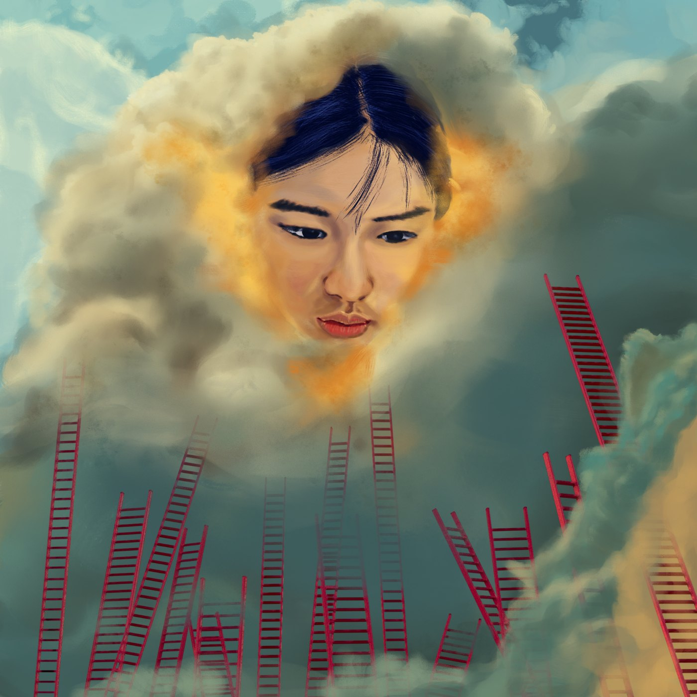
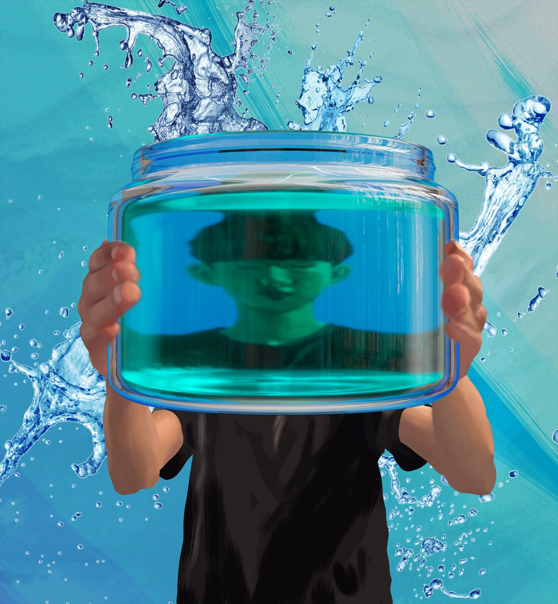
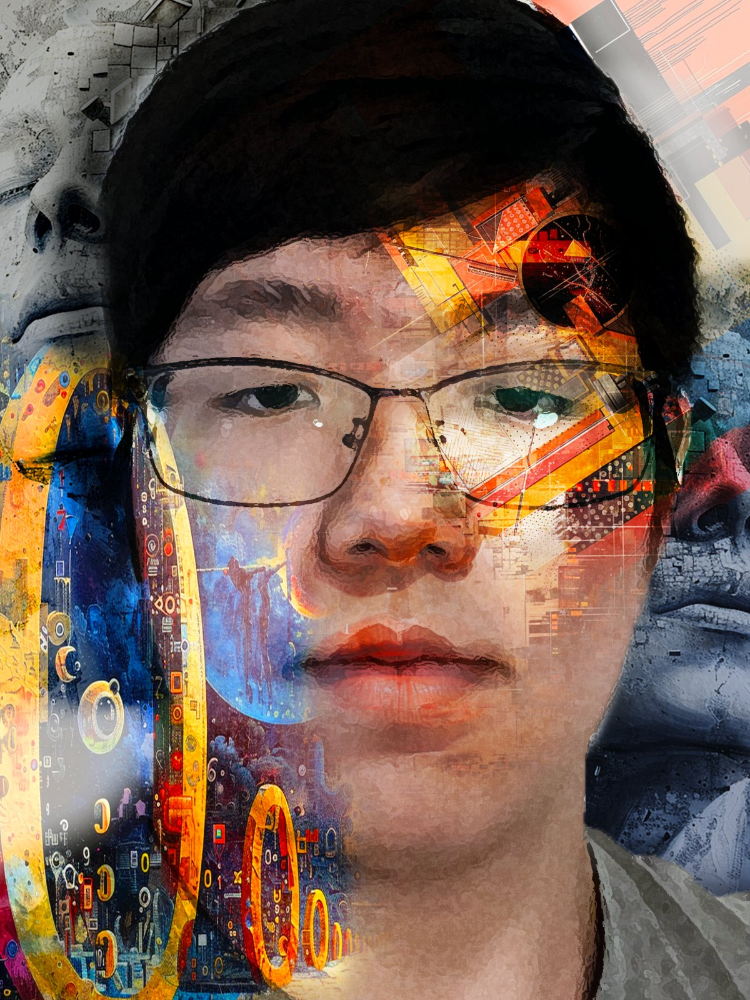
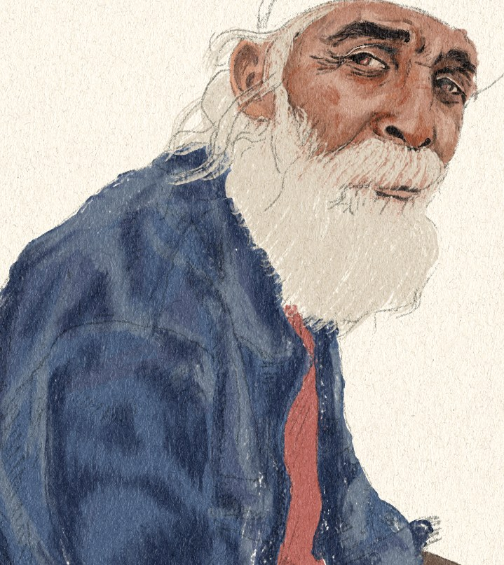
학생이 가져온 것은 자기가 생각하는 이야기의 단어 하나, 짧은 문장 하나였습니다.
거기서 storyboard를 짜고 character design을 만들었습니다. 무엇을 보여줄지가 정해지자 어떻게 움직이고 어떻게 연결할지가 따라왔습니다. 지금은 첫 장면이 2D animation으로 완성된 상태입니다.
올해 Scholastic film & animation 부문 출품을 목표로 이어가고 있습니다.
뉴욕 타임즈가 주최한 학생 미디어 아트 경연대회 출품작입니다. 주제는 인공지능. 학생들은 각자 인공지능에 대해 어떻게 생각하는지를 영상으로 만들었습니다.
한 가지 형식으로 통일하지 않았습니다. 인터뷰를 담은 작업도 있고, motion graphics로 개념을 풀어낸 작업도 있습니다. 같은 주제라도 무엇을 말하려는지에 따라 형식이 달라지기 때문입니다.
After Effects, Premiere Pro, Illustrator를 작업 목적에 맞춰 나눠 썼습니다.
고등학교 양궁 선수 두 명의 프로모션 비디오, 그중 intro 작업입니다.
본편이 시작되기 전에 두 선수가 누구인지를 짧게 각인시켜야 하는 구간입니다. 이름과 종목을 어떤 순서로 등장시킬지, 어느 리듬으로 끊을지가 이 작업의 내용이었습니다.
motion graphics로 만든 타이틀이 실제 경기 영상과 맞물리도록 편집했습니다.
2025 Ocean Awareness Contest 출품작. 학생이 설계한 것은 빗물을 받아 재활용해 나무와 풀, 꽃을 기르는 공간을 품은 교통 정거장이었습니다. 사람들이 잠시 머무는 쉘터와 식물이 자라는 공간을 하나의 구조 안에 넣은 건축 설계입니다.
이 설계를 3D modeling으로 세우고 rendering 이미지로 만들었습니다. 그리고 3D printing으로 작은 스케일의 실물 모형까지 제작했습니다.
이 작업의 과정은 architectural visualization 분야에서 실제로 이루어지는 방식과 같습니다.
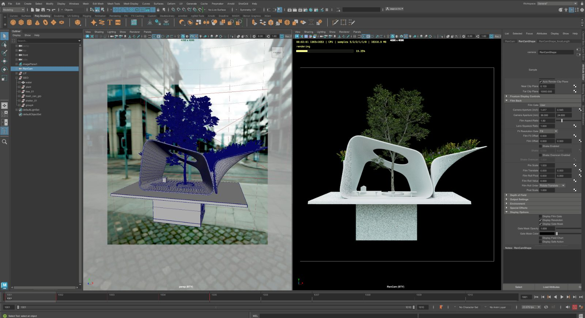
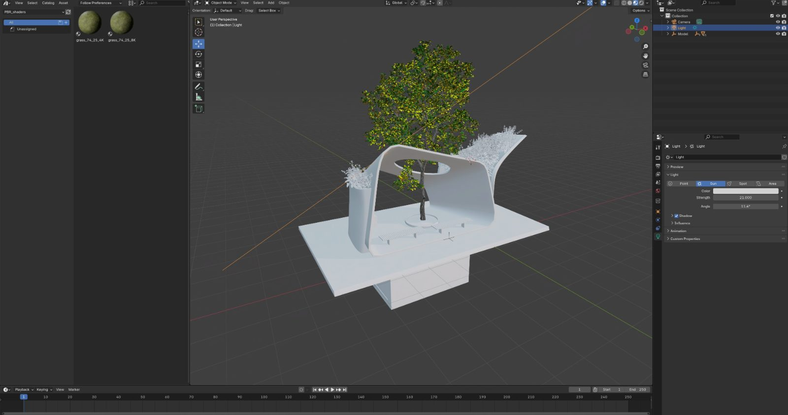
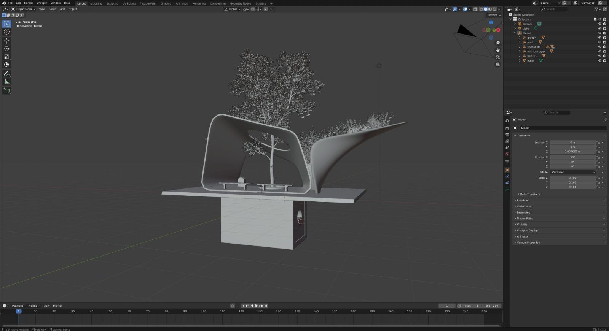
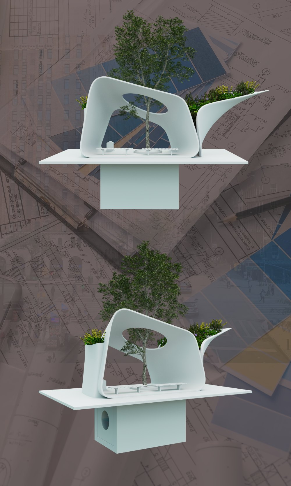
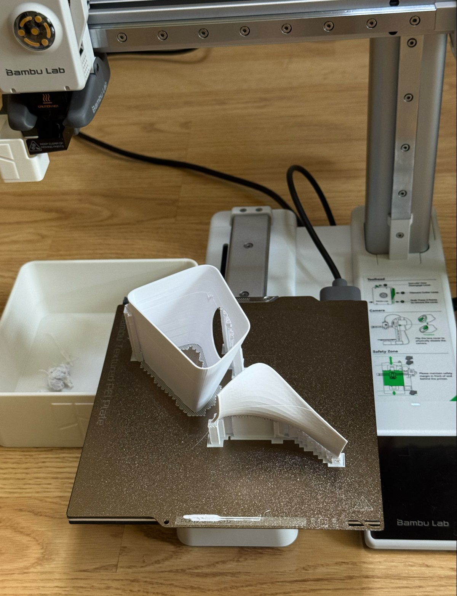
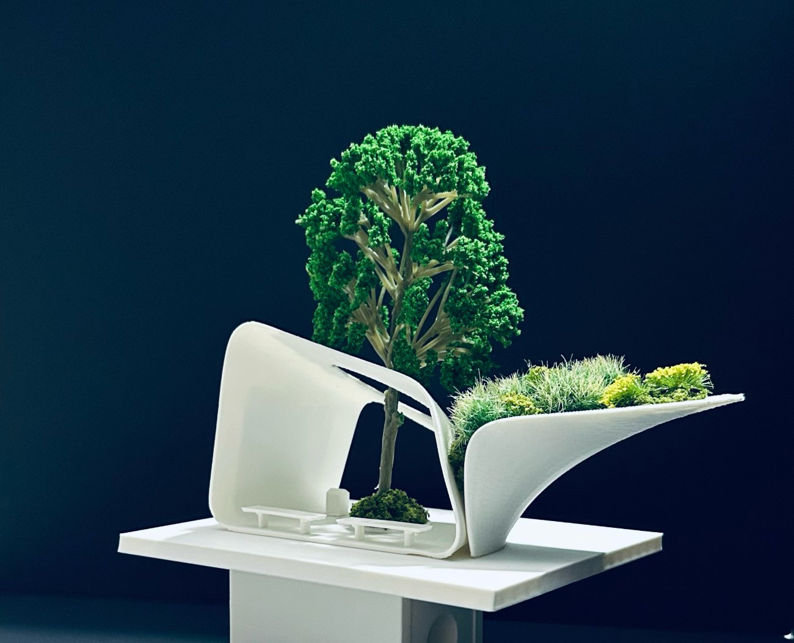
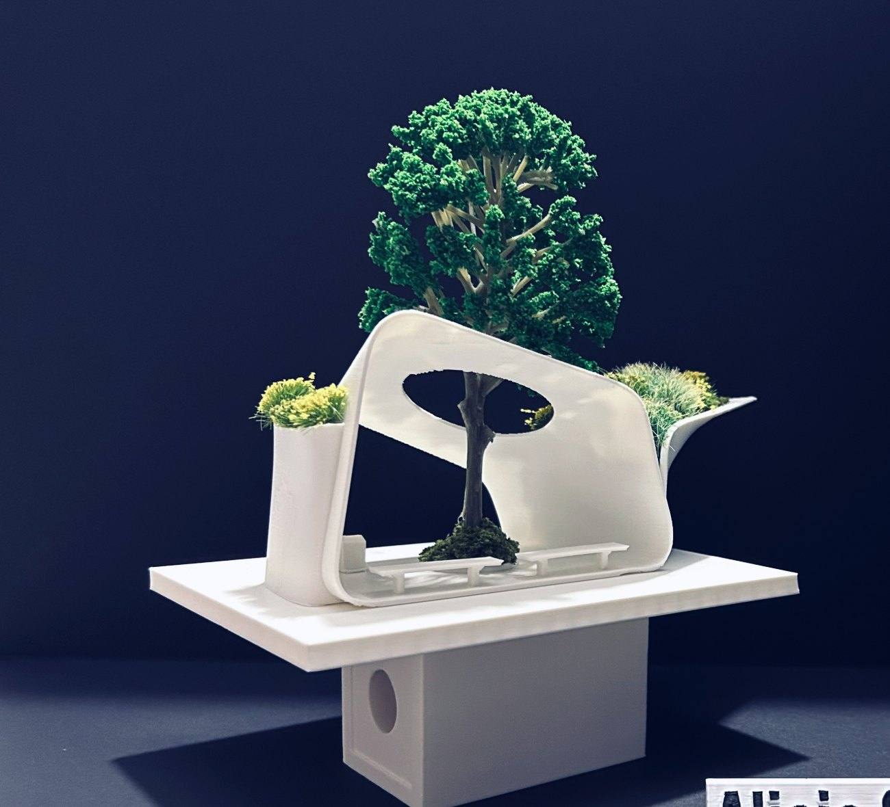
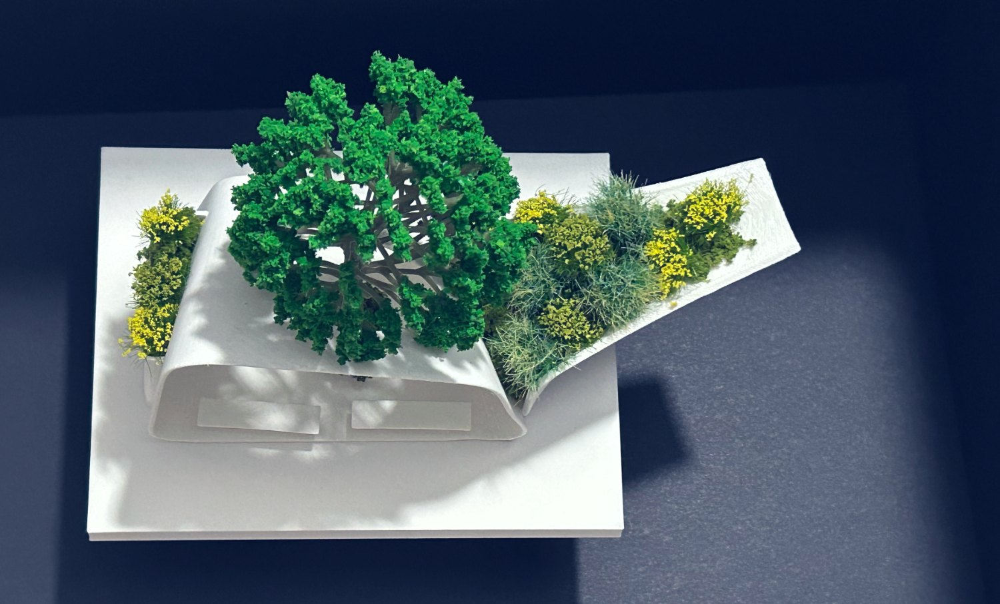
지금까지 함께한 학생들은 대부분 같은 지점에서 출발했습니다. 자기 아이디어를 눈에 보이게 만들고 싶다는 것.
그림을 잘 그려야 하는 것은 아닙니다. 시각화의 방법은 그림만이 아닙니다. 3D modeling으로 형태를 세우는 학생도 있고, 영상 편집으로 이야기를 만드는 학생도 있습니다. 아이디어에 맞는 방법을 찾는 것이 수업의 첫 단계입니다.
요즘 학생들에게 그 수단은 자연스럽게 디지털입니다. 컴퓨터와 태블릿이 이미 익숙한 세대이니까요. 문제는 도구가 너무 많다는 것입니다. 무엇을 써야 하는지, 지금 무엇이 쓰이고 있는지, 자기 아이디어에 어떤 방식이 맞는지. 혼자 알아내기 어렵습니다.
아직 무엇을 만들고 싶은지 모르는 학생도 있습니다. 그럴 때는 그것을 찾는 것부터 함께합니다.
20년간 광고 영상, 3D 애니메이션, 모션 그래픽 작업을 해왔습니다. 의료 기업의 제품 시각화, 건축 비주얼라이제이션, 대학 리크루팅 영상까지 실제 목적을 가진 영상 작업을 다뤄왔습니다.
Bergen Tech 재학생들이 여름부터 수업을 듣고 있습니다.
학생들에게 가르치는 것은 이 현장에서 쓰는 방식 그대로입니다. 학원용으로 다시 만든 커리큘럼이 아닙니다.
무료 1:1 면담으로
시작합니다.
학생이 지금 무엇을 하고 있고 무엇을 만들고 싶은지 이야기를 나눈 뒤, 그에 맞는 수업 계획과 일정을 함께 정합니다. 등록을 결정하지 않으셔도 괜찮습니다.